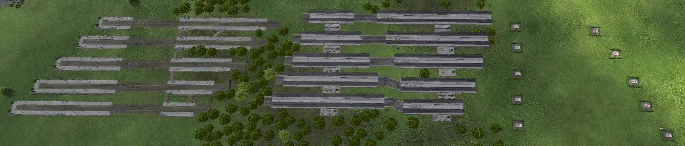
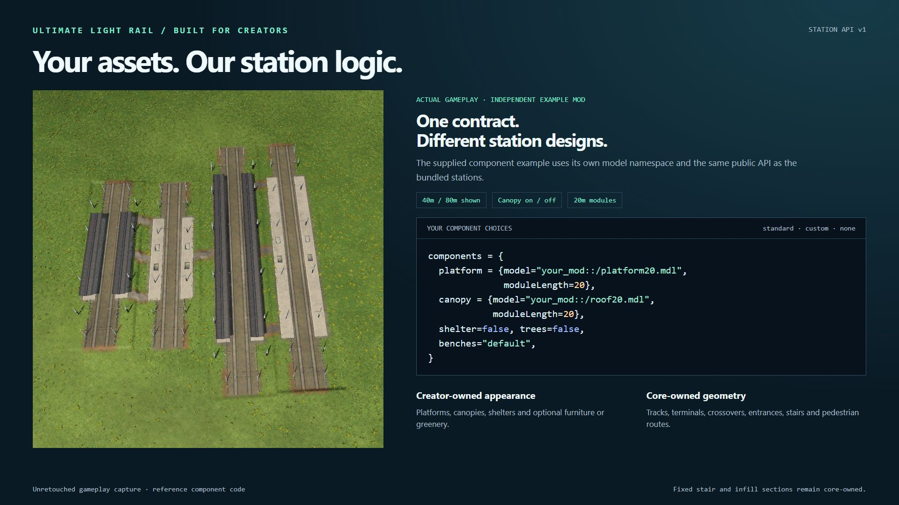
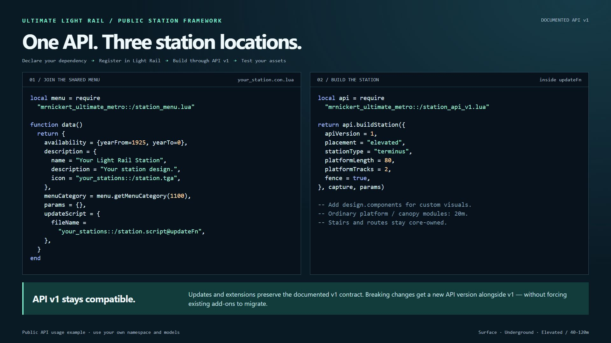

Ultimate Light Rail

Build a light rail network with stations designed for through services and reversing tram operations.
Ultimate Light Rail adds a dedicated Light Rail construction menu containing the native tram depot, fenced light rail track and configurable passenger stations. Use existing tram vehicles and connect directly to native electric tram infrastructure.
Three locations, one station family
- Surface: low platforms, shelters and furniture, with a pedestrian underpass at through stations and a landscaped forecourt at terminus stations.
- Underground: tracks at -18m, a fixed station hall and street-level pedestrian access.
- Elevated: a concrete structure at +12m, platform canopies and a central entrance with stairs from street level.

Through or terminus
Choose a through station for intermediate stops or a terminus with an integrated scissors crossover. Tram vehicles can stop and reverse without a visible turning loop. Native track connections and tram traffic handling are retained.
Configurable platforms
All stations have two platform tracks. Choose 40, 60, 80, 100 or 120 metres, with optional approach fences above ground. Crossovers are determined by station type; there is no separate crossover setting.
Available from 1925: bundled stations and fenced light rail track follow the introduction year of the native modern tram track. The native tram depot retains its own availability dates.

Getting started
- Enable Ultimate Light Rail and load your game.
- Open Light Rail, between Road and Rail in the construction bar.
- Choose a station location, type and platform length; place it and connect electric tram track.
- Connect a tram depot, create a line and assign suitable tram vehicles.
Use vehicles that fit the platform length: an overlong vehicle can keep the crossover occupied. Select terminals or add waypoints when you need a particular track assignment. The mod uses existing vehicles; it does not include a new vehicle fleet.

Built for station creators
The public Station API v1 and developer kit let asset creators supply their own station designs without rebuilding transport logic. Ordinary straight platform and canopy components are exactly 20m. Select standard components, custom models or no optional decoration. Entrances, stairs, routing and the two-track layout remain core-owned. The underground hall is fixed in v1.
Stations registered through the public menu helper appear in the same Light Rail menu, regardless of the asset mod's namespace.

You supply the appearance. The core supplies the network.
- Creator-owned: ordinary 20m platform and canopy models, shelters, trees, planters, benches, bins and lights.
- Core-owned: two-track layout, terminals, crossovers, stopping positions, fixed entrances, stairs, pedestrian routes and structural safety features.
- Three choices per optional component: use the standard component, provide a qualified custom model, or omit it with
false. The platform itself is required.
A small, explicit integration
Declare the core dependency, register a construction through station_menu.lua.getMenuCategory(), and call station_api_v1.lua.buildStation() from your update script. Your own namespace is recognised through the shared category; no core patch is needed.

The API panels are documentation graphics; their gameplay example is a real capture. Code is provided as text in the developer kit. Ordinary platform and canopy modules must declare moduleLength=20. Short infill and stair zones remain core-owned. Underground custom component models are not supported in v1.
API compatibility commitment: updates and extensions within the documented API v1 contract remain backward compatible. Existing conforming v1 add-ons will continue to work without a rewrite for each core update. Breaking changes will use a new, explicitly versioned API alongside v1; the v1 contract will remain available and supported.
The developer kit is documentation and source material, not a directly installable mod. The optional example mod requires Ultimate Light Rail; the main mod does not require the example.
Compatibility and removal
The construction UI is included in the main mod. Disable the separate Ultimate Light Rail UI Preview if it is still installed from testing. Other mods replacing the same native construction UI may conflict.
Do not remove Ultimate Light Rail from a save containing its stations or infrastructure. Asset mods must also remain installed while their stations are in use. The release does not provide migration for development saves. Compatibility with console platforms has not been established; current testing uses Windows/Steam.
Credits
Created by MrNickert. Station assemblies reference installed Transport Fever 3 assets by Urban Games. No native mesh, material or texture binaries are redistributed. Gameplay panels are actual in-game captures. API panels combine an authentic example capture with documented reference code; the contract panel is documentation, not gameplay.